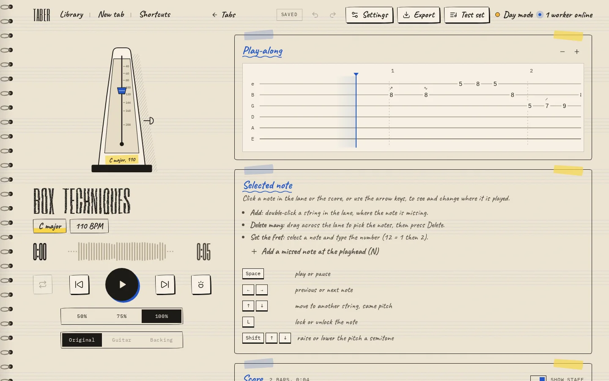

NVIDIA GPU
Windows and Linux, driver 580 or newer
3–4 GB
Fastest. Every model on the graphics card: pitch, onsets, beats, backing-track removal, the string classifier.
Record a solo. Taber hears which string and fret each note was played on, the rhythm, the bends and slides, and writes the tab. You fix what it got wrong, then play along.
All downloadsWindows, macOS and Linux other systems, sizes, checksums ↓
1 2 3 4Free. v0.1.0 . One installer per system; the engine comes later, on first launch.
Check a download against SHA256SUMS.txt, or read all releases and their notes.
The first launch asks once which engine to install, and suggests the one that fits this computer.
Windows and Linux, driver 580 or newer
Fastest. Every model on the graphics card: pitch, onsets, beats, backing-track removal, the string classifier.
any supported computer
The same models on the CPU. Same tabs, a slower analysis.
small disks, older machines
A lighter pitch tracker, no backing-track removal, no string classifier. Video assist still works.
Your recordings never leave your computer: the engine runs there, not on a server.
What happens after you drop a take, in the order the engine does it.
Measured on recordings it was not trained on, not promised.
of notes fully right (pitch, string and fret) on an acoustic player it never heard (GuitarSet).
on unseen electric licks (IDMT): electric guitar is the hard case, mostly notes that ring over the next one.
line at a time: solos, not chords. Hammer-ons and pull-offs are not detected from audio yet.
The app is not code-signed yet, so the first launch needs one extra click.
chmod +x HBA-Guitar-Taber-*.AppImage, or install the .deb.